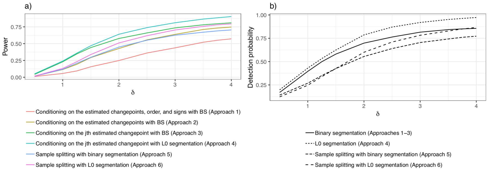

Through tutorials, this website illustrates our framework to test the null hypothesis that there is no change in mean near changepoints estimated via L0 and binary segmentation; as described in our paper (Jewell, Fearnhead, & Witten, 2019).
We consider the changepoint model and assume that $\mu_1,\ldots,\mu_T$ is piecewise constant, in the sense that $\mu_{\tau_j+1}=\mu_{\tau_j + 2 } = \ldots = \mu_{\tau_{j+1}}$, $\mu_{\tau_{j+1}} \neq \mu_{\tau_{j+1}+1}$, for $j=0,\ldots,K-1$, where $0 = \tau_{0} < \tau_{1} < \ldots < \tau_{K} < \tau_{K+1} = T$, and where $\tau_1,\ldots,\tau_K$ represent the true changepoints.
We estimate changepoints via $\ell_0$ or binary segmentation based on noisy observations $y_t$.
$\ell_0$ segmentation: In the case of $\ell_0$ segmentation (Rigaill, 2015; Maidstone, Hocking, Rigaill, & Fearnhead, 2017), changepoints are estimated by solving the optimization problem
for the global optimum. Our estimates for the changepoints correspond to the breakpoints of $\hat{\mu}_1, \ldots, \hat{\mu}_T$. This results in estimated changepoints $\mathcal{M}(y) =\{\hat{\tau}_1, \ldots,\hat{\tau}_K\}$.
Binary segmentation: In the case of binary segmentation (Vostrikova, 1981), changepoints are estimated by recursively maximizing the CUSUM statistic: defined through a contrast $g_{(s, \tau, e)}\in\mathbb{R}^{T}$, which summarizes the evidence for a change at $\tau$ in the data $y_{s:e}:= (y_{s}, \ldots, y_{e})$ by the difference in the empirical mean of the data before and after $\tau$ (normalized to have the same variance for all $\tau$). The first estimated changepoint maximizes the CUSUM statistic over all possible locations. Subsequent changepoints are estimated at the location that maximizes the CUSUM statistic of the data when regions between previously estimated changepoints are considered. This results in estimated changepoints $\mathcal{M}(y) =\{\hat{\tau}_1, \ldots,\hat{\tau}_K\}$, the order each changepoint entered the model $\mathcal{O}(y)$, and the sign of the change in mean due to each changepoint $\Delta(y)$.
To quantify the uncertainty of these estimates, we test the null hypothesis that there is no change in mean near an estimated changepoint. In particular, we test the null hypothesis for a T-vector contrast $\nu$ defined based on the definition of near. We define fixed and adaptive defintions of near. In the fixed window case, we define near based on a window $h>0$ around $\hat{\tau}_j$ whereas, in the adaptive case, near is defined based on the neighboring changepoints
Our framework allows us to efficiently compute $p$-values based on adaptive and fixed test statistics and for different conditioning sets. Let $\nu^\top y$ be the observed test statistic and let $\phi = \nu^\top Y$. In our paper (Jewell, Fearnhead, & Witten, 2019), we show that the $p$-value corresponding to the test $H_0: \nu^\top \mu = 0$ can be written as for a conditioning set $\mathcal{S}$.
In what follows, is a perturbation of the observed data $y$. (See Theorem 1 of our paper (Jewell, Fearnhead, & Witten, 2019) for additional details.) Our software computes $p$-values for the following test statistics and conditioning sets:
Type = ‘L0-fixed’: for fixed $\nu$.
Type = ‘BS-fixed’: for fixed $\nu$.
Type = ‘BS-adaptive-M-O-D’: for adaptive $\nu$.
Type = ‘BS-adaptive-M-O’: for adaptive $\nu$.
Type = ‘BS-adaptive-M’: for adaptive $\nu$.
Since $Y_t$ is Gaussian, $\phi | \mathcal{S}$ is a Gaussian truncated to $\mathcal{S}$. Therefore, to calculate each of these probabilities, we must determine $\mathcal{S}$. See Sections 4 and 5 of our paper (Jewell, Fearnhead, & Witten, 2019) for a description of the algorithms we use to efficiently calculate $\mathcal{S}$ exactly. See the tutorial page for a demo of this software.
Sean Jewell received funding from the Natural Sciences and Engineering Research Council of Canada. This work was partially supported by Engineering and Physical Sciences Research Council Grant EP/N031938/1 to Paul Fearnhead, and NSF CAREER DMS-1252624, NIH grants DP5OD009145, R01DA047869, and R01EB026908, and a Simons Investigator Award in Mathematical Modeling of Living Systems to Daniela Witten.